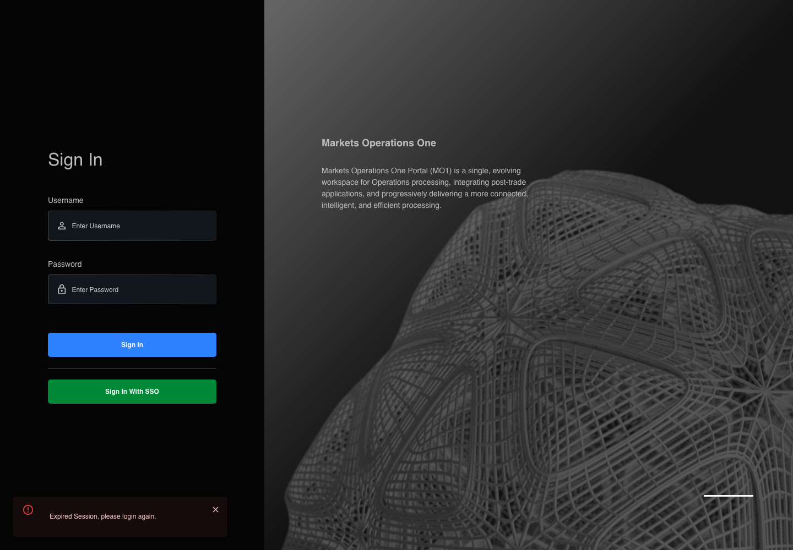

All canonical cases
AUTH-111: Invalidate replay of a logged-out session Business acceptance remains unverified. Owner: unknown. Review the canonical definition and fixture limits before acceptance.
Latest local result: PASS Business acceptance: NOT_ESTABLISHED.
The latest local result describes execution. The historical definition review assesses the case design before execution.
Latest step screenshot bindings: COMPLETE . 9/9 canonical steps have execution screenshots.
Bindings measure structural coverage only. They do not establish screenshot content quality or relevance.
Screenshot content review: NOT_REVIEWED . Recorded context does not establish human visual review.
Canonical Gherkin definition . Definition version: 2. SHA-256: 3d9f0af259872ea9a95532c4a10db70d942790b5ae5e8ef549b67578a8de740e.
Historical definition review (preflight): UNVERIFIED A definition review FAIL can coexist with local PASS. The definition failed preflight quality checks.
This historical review does not change the latest execution result. Resolve definition gaps before business acceptance.
Canonical Gherkin steps Feature: Logout
@AUTH-111
Scenario: Invalidate replay of a logged-out session
Given User A completed BFF logout for SESSION-A in an isolated browser context
And a captured access fixture for SESSION-A still has a future token expiry
When the browser attempts POST "/api/auth/v2/sso/validate" with the captured access fixture
Then the validation response rejects the revoked SESSION-A with TOKEN_INVALID_EXPIRED
And the textbox with placeholder "Enter Username" on the login page is visible
And the text input with placeholder "Enter Password" on the login page is visible
And the button labelled "Sign In" on the login page is visible
And the alert in the portal notification area displays exactly "Expired Session, please login again."
And the tablist named "workspaces" on the Home page is absent Acceptance and evidence limits: NO_COMPLETE_REAL_APPLICATION_BINDING, CANONICAL_REVIEW_OR_EVIDENCE_UNRESOLVED.
Planned essential canonical frames: 2. Plan completeness requires separate review.
Latest attempt AUTH-111 actual current BFF logout invalidates replay PASS · application/run-074/auth-111-actual-current-bff-logout-invalidates-replay-5e6ec1a9aa73-attempt-1 · ACTUAL_APPLICATION_LOCAL_SERVICES
Actual MFE and exact-current BFF with disposable PostgreSQL migrations. Synthetic external identity and entitlements; isolated bootstrap. Request-scoped analytics or entitlement fault injection. No remote provider or production Boot4 claim.
2026-10-22T06:53:39.717Z to 2026-10-22T06:53:42.205Z
Assertions and result · Artifact manifest · Exact run inputs and source hashes
Result SHA-256: 6c19b172316eb0b2333dd41361a3c66c018b65cb419ed0a3fb695652c36a33e0 Playwright trace
Machine observations Screenshot capture: CAPTURED. Named frames: 10.
Step screenshot bindings: COMPLETE. 9/9 canonical steps have execution screenshots.
Bindings measure structural coverage only. They do not establish screenshot content quality or relevance.
Screenshot content review: NOT_REVIEWED . Recorded context: 0/10 frames. Identical image bytes: 7 repeated frames. Recorded context does not establish human visual review.
Canonical step timeline Given User A completed BFF logout for SESSION-A in an isolated browser context
1. step-01 Visible state after step 1: Given User A completed BFF logout for SESSION-A in an isolated browser context
2026-10-22T06:53:40.639Z · 1440×100099567bb3808af958792a6b38879d848938c08b417fb7dfff75bde75fcbd51a3a And a captured access fixture for SESSION-A still has a future token expiry
2. step-02 Visible state after step 2: And a captured access fixture for SESSION-A still has a future token expiry
2026-10-22T06:53:40.743Z · 1440×100099567bb3808af958792a6b38879d848938c08b417fb7dfff75bde75fcbd51a3a Image bytes match frame 1. An unchanged image can be valid for consecutive assertions. This match does not establish correct step content.
When the browser attempts POST "/api/auth/v2/sso/validate" with the captured access fixture
3. step-03 Visible state after step 3: When the browser attempts POST "/api/auth/v2/sso/validate" with the captured access fixture
2026-10-22T06:53:40.882Z · 1440×1000a40948c7c5f683be16603a131e669fdfefc46300ada4b40c0ac9ff4e0afa76c4 Then the validation response rejects the revoked SESSION-A with TOKEN_INVALID_EXPIRED
4. step-04 Visible state after step 4: Then the validation response rejects the revoked SESSION-A with TOKEN_INVALID_EXPIRED
2026-10-22T06:53:41.011Z · 1440×1000a40948c7c5f683be16603a131e669fdfefc46300ada4b40c0ac9ff4e0afa76c4 Image bytes match frame 3. An unchanged image can be valid for consecutive assertions. This match does not establish correct step content.
And the textbox with placeholder "Enter Username" on the login page is visible
5. step-05 Visible state after step 5: And the textbox with placeholder "Enter Username" on the login page is visible
2026-10-22T06:53:41.135Z · 1440×1000a40948c7c5f683be16603a131e669fdfefc46300ada4b40c0ac9ff4e0afa76c4 Image bytes match frame 4. An unchanged image can be valid for consecutive assertions. This match does not establish correct step content.
And the text input with placeholder "Enter Password" on the login page is visible
6. step-06 Visible state after step 6: And the text input with placeholder "Enter Password" on the login page is visible
2026-10-22T06:53:41.250Z · 1440×1000e0b52bab75e50ace753a255b437cef5cdbcb9ce22cec617f53ab12230762f599 And the button labelled "Sign In" on the login page is visible
7. step-07 Visible state after step 7: And the button labelled "Sign In" on the login page is visible
2026-10-22T06:53:41.367Z · 1440×1000a40948c7c5f683be16603a131e669fdfefc46300ada4b40c0ac9ff4e0afa76c4 Image bytes match frame 5. An unchanged image can be valid for consecutive assertions. This match does not establish correct step content.
And the alert in the portal notification area displays exactly "Expired Session, please login again."
8. step-08 Visible state after step 8: And the alert in the portal notification area displays exactly "Expired Session, please login again."
2026-10-22T06:53:41.494Z · 1440×1000e0b52bab75e50ace753a255b437cef5cdbcb9ce22cec617f53ab12230762f599 Image bytes match frame 6. An unchanged image can be valid for consecutive assertions. This match does not establish correct step content.
And the tablist named "workspaces" on the Home page is absent

9. step-09 Visible state after step 9: And the tablist named "workspaces" on the Home page is absent
2026-10-22T06:53:41.631Z · 1440×1000e0b52bab75e50ace753a255b437cef5cdbcb9ce22cec617f53ab12230762f599 Image bytes match frame 8. An unchanged image can be valid for consecutive assertions. This match does not establish correct step content.
Additional named frames 10. final-result The final visible state after the named test assertions.
2026-10-22T06:53:41.900Z · 1440×1000e0b52bab75e50ace753a255b437cef5cdbcb9ce22cec617f53ab12230762f599 Image bytes match frame 9. An unchanged image can be valid for consecutive assertions. This match does not establish correct step content.
Screenshots establish visible state only. Assertions and traces support functional claims.
Earlier attempt history (1) Earlier attempt PASS (superseded by latest PASS) AUTH-111 actual current BFF logout invalidates replay PASS · application/run-041/auth-111-actual-current-bff-logout-invalidates-replay-5e6ec1a9aa73-attempt-1 · ACTUAL_APPLICATION_LOCAL_SERVICES
Actual MFE and exact-current BFF with disposable PostgreSQL migrations. Synthetic external identity and entitlements; isolated bootstrap. Request-scoped analytics or entitlement fault injection. No remote provider or production Boot4 claim.
2026-10-22T05:44:50.412Z to 2026-10-22T05:44:52.438Z
Assertions and result · Artifact manifest · Exact run inputs and source hashes
Result SHA-256: 0d6aa37d0b564004c2dd1f2e7fcb539527b948368f3d980497aa62e3ccd833c9 Playwright trace
Machine observations Screenshot capture: CAPTURED. Named frames: 10.
Step screenshot bindings: COMPLETE. 9/9 canonical steps have execution screenshots.
Bindings measure structural coverage only. They do not establish screenshot content quality or relevance.
Screenshot content review: NOT_REVIEWED . Recorded context: 0/10 frames. Identical image bytes: 6 repeated frames. Recorded context does not establish human visual review.
Canonical step timeline Given User A completed BFF logout for SESSION-A in an isolated browser context
1. step-01 Visible state after step 1: Given User A completed BFF logout for SESSION-A in an isolated browser context
2026-10-22T05:44:51.243Z · 1440×100099567bb3808af958792a6b38879d848938c08b417fb7dfff75bde75fcbd51a3a And a captured access fixture for SESSION-A still has a future token expiry
2. step-02 Visible state after step 2: And a captured access fixture for SESSION-A still has a future token expiry
2026-10-22T05:44:51.358Z · 1440×100099567bb3808af958792a6b38879d848938c08b417fb7dfff75bde75fcbd51a3a Image bytes match frame 1. An unchanged image can be valid for consecutive assertions. This match does not establish correct step content.
When the browser attempts POST "/api/auth/v2/sso/validate" with the captured access fixture
3. step-03 Visible state after step 3: When the browser attempts POST "/api/auth/v2/sso/validate" with the captured access fixture
2026-10-22T05:44:51.482Z · 1440×10007412f9884af9448431a1035bd14eb282ef0a5d7a258ea38016d4d92165514f1e Then the validation response rejects the revoked SESSION-A with TOKEN_INVALID_EXPIRED
4. step-04 Visible state after step 4: Then the validation response rejects the revoked SESSION-A with TOKEN_INVALID_EXPIRED
2026-10-22T05:44:51.575Z · 1440×1000a40948c7c5f683be16603a131e669fdfefc46300ada4b40c0ac9ff4e0afa76c4 And the textbox with placeholder "Enter Username" on the login page is visible
5. step-05 Visible state after step 5: And the textbox with placeholder "Enter Username" on the login page is visible
2026-10-22T05:44:51.674Z · 1440×1000a40948c7c5f683be16603a131e669fdfefc46300ada4b40c0ac9ff4e0afa76c4 Image bytes match frame 4. An unchanged image can be valid for consecutive assertions. This match does not establish correct step content.
And the text input with placeholder "Enter Password" on the login page is visible
6. step-06 Visible state after step 6: And the text input with placeholder "Enter Password" on the login page is visible
2026-10-22T05:44:51.762Z · 1440×1000e0b52bab75e50ace753a255b437cef5cdbcb9ce22cec617f53ab12230762f599 And the button labelled "Sign In" on the login page is visible
7. step-07 Visible state after step 7: And the button labelled "Sign In" on the login page is visible
2026-10-22T05:44:51.863Z · 1440×1000e0b52bab75e50ace753a255b437cef5cdbcb9ce22cec617f53ab12230762f599 Image bytes match frame 6. An unchanged image can be valid for consecutive assertions. This match does not establish correct step content.
And the alert in the portal notification area displays exactly "Expired Session, please login again."
8. step-08 Visible state after step 8: And the alert in the portal notification area displays exactly "Expired Session, please login again."
2026-10-22T05:44:51.958Z · 1440×1000e0b52bab75e50ace753a255b437cef5cdbcb9ce22cec617f53ab12230762f599 Image bytes match frame 7. An unchanged image can be valid for consecutive assertions. This match does not establish correct step content.
And the tablist named "workspaces" on the Home page is absent
9. step-09 Visible state after step 9: And the tablist named "workspaces" on the Home page is absent
2026-10-22T05:44:52.042Z · 1440×1000a40948c7c5f683be16603a131e669fdfefc46300ada4b40c0ac9ff4e0afa76c4 Image bytes match frame 5. An unchanged image can be valid for consecutive assertions. This match does not establish correct step content.
Additional named frames 10. final-result The final visible state after the named test assertions.
2026-10-22T05:44:52.208Z · 1440×1000a40948c7c5f683be16603a131e669fdfefc46300ada4b40c0ac9ff4e0afa76c4 Image bytes match frame 9. An unchanged image can be valid for consecutive assertions. This match does not establish correct step content.
Screenshots establish visible state only. Assertions and traces support functional claims.